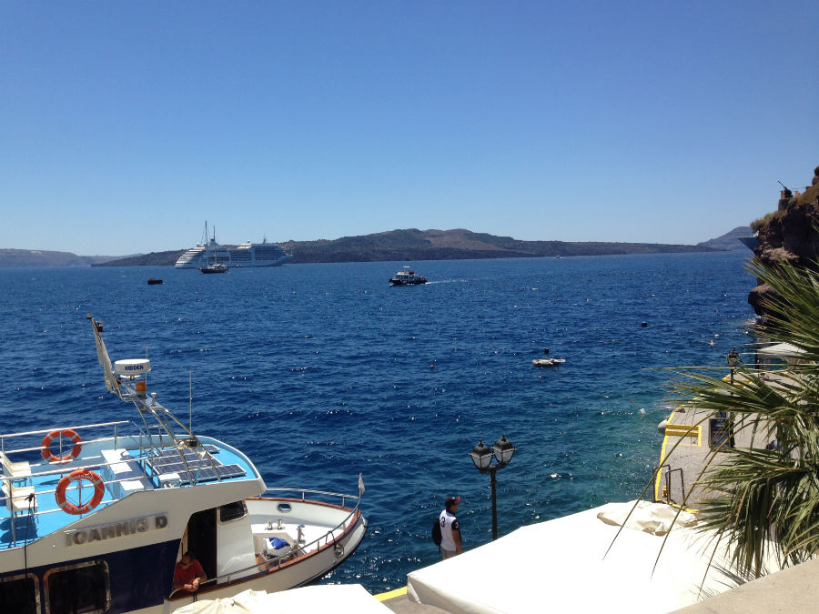

About Me
Kelsey
My name is Kelsey Brown. Most people call me “Kels”. I grew up in Miami my whole life before moving to Gainesville for college. I am twenty-one years old and currently a senior at the University of Florida, majoring in Telecommunications with a track in media and society. I hope to graduate in either spring 2015 or summer 2015. Moving to Gainesville was quite a change from a big city like Miami. As I grew up there, it wasn't uncommon to hear Spanish spoken in many public places. Popular activities there included boating or going to the beach. I learned to adjust and I now love it here at UF. The sports aspect of the university certainly caught my eye.
Photography
One interest of mine that I'm starting to notice is photography. I really love it. Even with a camera as simple as an iPhone, I love taking photos wherever I go and editing them as well. Adjusting saturation, clarity, sharpening and many other features are all exciting to me so I can share my favorite photos, whether it be on Facebook, Instagram, or Google Plus.

Greece, June 2014.
Music
An interest of mine is music. I cannot imagine going a day without listening to my favorite singers and bands. My favorite singers/bands at the moment are Ed Sheeran, Taylor Swift, Luke Bryan, and Mumford and Sons. In essence, I like listening to music and reviewing lyrics that I can relate to. The video below is a link to my favorite song at the moment, titled Afire Love.